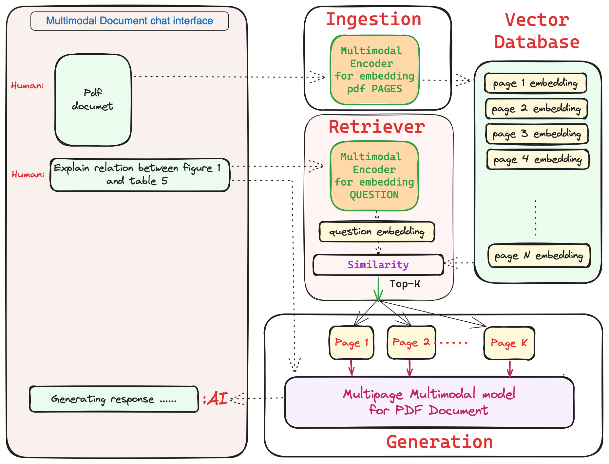

This project builds a RAG system using Multipage Multimodal Transformer for chatting with you PDFs
How build such a system
1. Train multimodal model for Q&A on single pdf page with text, table, chart, plot and figures.
2. Extend this multimodal architecture to handle multiple pages.
3. Train this new multipage multimodal model for Q&A on multipage pdfs.
4. The model will always will have page limits, hence need to build a retriever which can fetch best top-k pages for Q&A.